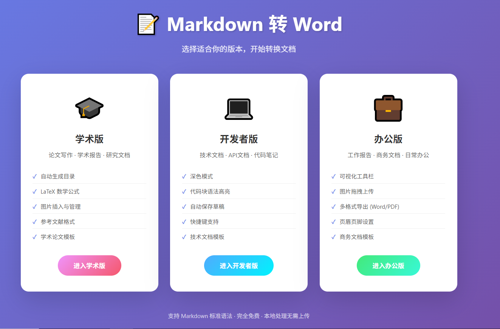

📋 项目简介
一款功能丰富的Markdown转Word文档工具，针对不同用户群体提供三个专业版本：学术版、开发者版和办公版。支持LaTeX数学公式、代码高亮、自动生成目录等功能，可打包为Windows桌面应用。
✨ 三大版本
🎓 学术版
专为论文写作、学术报告设计
- LaTeX数学公式支持（行内和块级）
- 自动生成目录
- 行号显示
- 学术论文模板（学位论文、期刊论文、研究报告）
- 参考文献格式支持
💻 开发者版
专为技术文档、代码笔记设计
- 深色主题界面
- 代码块语法高亮
- 自动保存草稿到本地
- 快捷键支持（Ctrl+B/I/S/K等）
- 光标位置显示（Ln/Col）
- 技术文档模板
📄 办公版
专为工作报告、商务文档设计
- 可视化工具栏（点击即插入）
- 图片拖拽上传
- 撤销/重做功能
- 双格式导出（Word + PDF）
- 页眉页脚设置
- 阅读时间估算
🛠️ 技术栈
JavaScript
Electron
marked.js
highlight.js
KaTeX
docx.js
html2pdf.js
🎯 项目亮点
- 三个专业版本，满足不同用户群体需求
- 支持LaTeX数学公式和代码语法高亮
- 可打包为Windows桌面应用，离线使用
- 支持Word和PDF双格式导出
- 丰富的快捷键和自动保存功能
- 现代化的用户界面设计
⌨️ 快捷键（开发者版）
Ctrl + B - 粗体Ctrl + I - 斜体Ctrl + ` - 行内代码Ctrl + K - 链接Ctrl + Shift + K - 代码块Ctrl + S - 保存草稿Ctrl + H - 标题
📸 应用截图

版本选择界面 - 学术版、开发者版、办公版三大专业版本